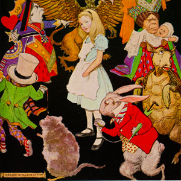
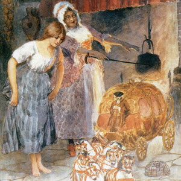
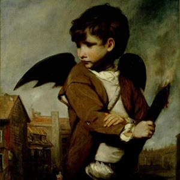

A MAD TEA-PARTY - Lewis Carroll
There was a table set out under a tree in front of the house, and the March Hare and the Hatter were having tea at it: a Dormouse was sitting between them, fast asleep, and the other two were using it as a cushion, resting their elbows on it, and talking over its head. "Very uncomfortable for the Dormouse," thought Alice; "only, as it's asleep, I suppose it doesn't mind." Continue reading
Back to topCINDERELLA - the brothers Grimm
The wife of a rich man fell sick: and when she felt that her end drew nigh, she called her only daughter to her bedside, and said, "Always be a good girl, and I will look down from heaven and watch over you." Soon afterwards she shut her eyes and died, and was buried in the garden; and the little girl went every day to her grave and wept, and was always good and kind to all about her. And the snow spread a beautiful white covering over the grave; but by the time the sun had melted it away again, her father had married another wife. This new wife had two daughters of her own: they were fair in face but foul at heart, and it was now a sorry time for the poor little girl. "What does the good-for-nothing thing want in the parlor?" said they; and they took away her fine clothes, and gave her an old frock to put on, and laughed at her and turned her into the kitchen. Continue reading
Back to topTHE NAUGHTY BOY - Hans Christian Andersen
Along time ago, there lived an old poet, a thoroughly kind old poet. As he was sitting one evening in his room, a dreadful storm arose without, and the rain streamed down from heaven; but the old poet sat warm and comfortable in his chimney-corner, where the fire blazed and the roasting apple hissed. Continue reading
Back to top